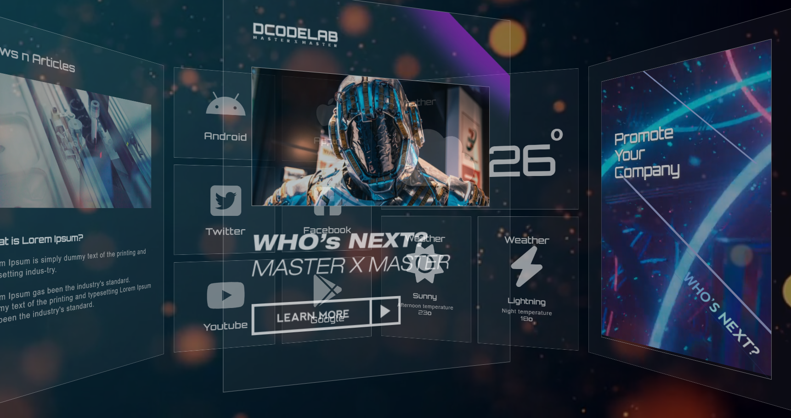

<!DOCTYPE html>
<html>
    <head>
        <meta charset="utf-8">
        <meta http-equiv="X-UA-Compatible" content="IE=edge">
        <meta name="viewport" content="width=device=width, initial-scale=1.0">
        <title>Portfolio_3D효과</title>
        <link rel="stylesheet" type="text/css" href="web_page.css">
    </head>
</html>
<body>
    <header>
        <div class="inner">
            <p class="name" onclick="location.href='index.html'" style="cursor: pointer;">Lee.GaHee</p>
            <div class="menu">
                <ul>
                    <li><a href="index.html">Home</a></li>
                    <li><a href="algorithm.html">Algorithm</a>
                        <div class="dropmenu">
                            <a href="imple.html">Implementation</a>
                            <a href="math.html">Mathematics</a>
                            <a href="dynamic.html">Dynamic.P</a>
                            <a href="graph.html">Graph</a>
                        </div>
                    </li>
                    <li><a href="profile.html">Profile</a></li>
                    <li><a href="portfolio.html">Portfolio</a></li>
                </ul>
            </div>
        </div> 
    </header>

    <section>
        <div class="top">ㅇ</div>
        <div class="container">
            <div class="title">
                <a href="portfolio.html"></a><h1>3D효과</h1>
                <p>입체적인 페이지를 만나보세요.</p>
            </div>

            <div class="detail">
                
                <div class="button"><a href="https://gahee1907.github.io/ex_2/" target="_blank">VIEW</a></div>

                <article>
                    <p>transform3D를 활용해 입체감을 느낄 수 있는 페이지입니다.<br> 콘텐츠 여러 개가 파노라마처럼 둥글게 돌면서 마우스 포인터를 올리면 정지됩니다.<br><br></p>
                    <h2>[작업기능]</h2>
                    <p> ▶ heaad에 웹 폰트 아이콘을 사용하기 위해 연결 구문 삽입<br><br>
                        ▶ video태그를 사용해 동영상이 마치 배경처럼 무한 반복 자동 재생 되도록 설정<br><br>
                        (배경 비디오에 <strong>loop</strong><span>무한 반복</span> ,<strong>autoplay</strong><span>자동 재생</span>,<strong>muted</strong><span>음소거</span> 적용)<br>
                        ▶ 모든 콘텐츠에 i태그를 통해 웹 폰트 아이콘 연결<br><br>
                        ▶ 4번째 콘텐츠에 video태그 사용해 동영상 삽입<Br>
                         (비디오에 <strong>loop</strong><span>무한 반복</span> ,<strong>autoplay</strong><span>자동 재생</span>,<strong>controls</strong><span>컨트롤 패널 출력</span> 적용)<br><br>
                        ▶ 5번째 콘텐츠의 이미지에 마우스 호버 시 이미지가 위로 올라가면서 <strong>반사광</strong>이 나타나는 효과 적용<br><br>
                        ▶ 만들어진 총 8개의 article을 원통모양으로 만듦<br>
                           각 article이 회전해야하는 각도 360°에서 8로 나눈 45°를 face1~face8까지 <strong>rotateY</strong>값을 차례대로 45씩 증가시킨 값 넣고<br>
                           article(600px)이 자신이 바라보는 위치에서 z축으로 이동시키기 위해 원의 테두리 구하는 공식 대입<br>
                           <br>
                            원통 안에서 보는 시점을 보여줘야하기 때문에 음수값을 넣어줌 transfrom: translateZ(-764px)<br><br>
                        ▶ keyframe을 생성해 animation으로 회전 <br>
                        (animation: <strong>ani</strong><span>keyframe</span> linear <strong>30s</strong><span>30초</span> <strong>infinite</strong><span>무한반복</span>)<br>
                        <br> ▶ Javascript로 모션 제어<br>
                        (for of반복문을 이용해 article요소의 개수만틈 반복해 <strong>mouseenter</strong>와 <strong>mouseleave</strong>이벤트 연결)

                    
                        </p>
                </article>
                <article>
                    <h2>[작업 페이지]</h2>
                    <p>index 총 1페이지</p>   
                </article>
                <article>
                    <h2>[사용 툴]</h2>
                    <p>HTML, CSS, Javascript, VS Code</p>   
                </article>
            </div>
        </div>
        
    </section>

    <footer>
        <div class="bottom">
            <h1>Lee.GaHee</h1>
            <ul>
                <li>Manseok-ro 159beon-gil, Jangan-gu, Suwon-si, Gyeonggi-do, Republic of Korea</li>
                <li>Tel: 010-3901-9410</li>
                <li>E-mail: rkgml10079@gmail.com</li>
            </ul>
        </div>
    </footer>
</body>